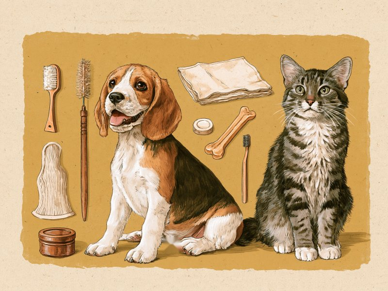

PRこの記事にはアフィリエイト広告(Amazonアソシエイト)のリンクが含まれます。Amazonのアソシエイトとして、Tiny Wondersは適格販売により収入を得ています。

「歯ブラシ、シート、ジェル、ガム……種類が多すぎて、どれから買えばいいのかわからない」。犬猫の歯みがきグッズの売り場で立ち止まってしまう飼い主さんは少なくありません。この記事では、歯ブラシ・歯みがきシート・ジェル・水に加えるタイプやデンタルガム・VOHCの認定マークという5つのテーマに分けて、それぞれの役割と選ぶときの目安を図鑑のように整理しました。 Toothbrushes, wipes, gels, chews... with so many options, many owners freeze in front of the pet dental care shelf. This article sorts dog and cat dental products into five groups and explains, like a field guide, what each one is for and what to look at when choosing.
グッズは歯みがきの入口であり、補助です。歯石がすでについている、歯ぐきが赤い、口臭が強い、口を触られるのをひどく嫌がる、といったときは、グッズを買い足す前にまず動物病院で口の中を確認してもらいましょう。受診を考えたいサインや、慣らし方・歯みがきの手順そのものは、ガイド記事のほうで紹介しています。
なお、この記事は獣医師の監修を受けていません。公開されている動物病院・保険会社・海外の獣医療機関の情報をもとに、AIを活用して整理したものです。歯みがきがなぜ必要なのか、どう慣らしていくのかといった「なぜ・どうやって」は犬猫の歯みがき・口腔ケアガイドにまとめており、この記事はその続きとして「どのグッズをどう選ぶか」だけに絞っています。
この記事で紹介する5タイプ:
- 歯ブラシ — 歯垢を落とす基本の道具。口の大きさと、飼い主の手の動かしやすさで選ぶ
- 歯みがきシート・ガーゼ — 歯ブラシの前段階。指で歯の表面をなでて、口を触られることに慣らす
- ジェル・ペースト — 必ずペット用を選ぶ。人用の歯みがき粉は使わない
- 水に加えるタイプ・デンタルガム・おもちゃ — 歯みがきに加える、またはできないときの補助。硬すぎるものは避ける
- VOHCの認定マーク — 米国の制度。歯垢・歯石の抑制を示す目印で、歯周病を防ぐ保証ではない
| グッズ | 主な役割 | 選ぶときのポイント |
|---|---|---|
| 歯ブラシ | 歯垢を落とす家庭ケアの中心 | 犬は犬用または小児用で口に入りやすいもの、猫はヘッドの小さい猫専用。持つときは鉛筆のように軽く、力を入れすぎない |
| 歯みがきシート・ガーゼ | 歯ブラシに慣らす前段階。歯と歯ぐきの表面を軽くなでる | 指に巻いて使う。猫は指を噛まれないよう注意し、嫌がったらすぐにやめる |
| ジェル・ペースト | 歯ブラシやシートと組み合わせて使う | 必ずペット用。人用はフッ素や塩分、犬に有毒なキシリトールを含むことがある。好む味を試す |
| 水に加えるタイプ・デンタルガム・おもちゃ | 歯みがきに加える、または歯みがきができないときの選択肢 | 犬の家庭ケアでは歯みがきが最も効果的とされる。簡単に曲がらない硬いものは歯が折れるおそれ |
| VOHCの認定マーク | 製品選びの目安のひとつ(歯垢抑制・歯石抑制の2区分) | 米国の制度。マークだけで判断せず、公式サイトの一覧で商品名を確かめる |
歯ブラシ:口の大きさと、手の動かしやすさで選ぶ
歯ブラシは、歯垢を落とす家庭ケアの中心になる道具です。犬の歯ブラシは「犬用または小児用で、口に入りやすいもの」がよいとされています。握るときは鉛筆のように軽く持ち、力を入れすぎると歯ぐきを傷つけるおそれがあると説明されています。
猫には「ヘッドの小さい猫専用歯ブラシ」がすすめられており、小児用で代用することもできるとされています。種類は毛のついたブラシタイプだけでなく、歯の上を転がすローラータイプ、やわらかいスポンジタイプもあり、愛猫に合うものを選ぶ、と紹介されています。ブラシを嫌がる子でも、別のタイプなら受け入れてくれることがあるかもしれません。
米国のVCA Hospitalsは、歯ブラシの選び方は犬の大きさと飼い主の手先の器用さによる、と説明しています。指にかぶせて使う指ブラシは始めたばかりの飼い主に使いやすいとされる一方、猫や超小型犬の口には入りにくいことがあるそうです。届きにくい部分のために、サイズや種類を複数そろえておくと役立つとされ、迷ったときは獣医師に相談するようすすめられています。最初から1本に決めきらず、「小さいもの」と「指で使うもの」のように2種類から試してみるのもひとつの方法です。
出典を見る
参考にした情報: アニコム損保 犬の歯みがき anicom-sompo.co.jp / アニコム損保 猫の歯みがき anicom-sompo.co.jp / VCA Hospitals(米) 歯ブラシと歯みがき剤の選び方 vcahospitals.com
歯みがきシート・ガーゼ:歯ブラシへ進むための橋渡し
歯ブラシをいきなり口に入れるのではなく、まず指で歯に触れることから始める。そのための道具が歯みがきシートとガーゼです。犬用の歯みがきシートは歯ブラシの前段階として使いやすいとされ、ガーゼは指に巻いて歯と歯ぐきの表面を軽くなでる使い方で、歯ブラシに慣れさせる段階で使われると紹介されています。家族の手で直接歯に触れるため、歯ブラシより安心感があるかもしれない、ともされています。
猫のシートは指に巻いて使うタイプで、歯みがき剤が染み込ませてあるものが主流とされています。指先で歯や歯ぐきに直接触れるので力加減を調整しやすい一方、指を噛まれないよう注意が必要と説明されています。嫌がったらすぐにやめ、触らせてくれる範囲から少しずつ、というのが基本とされているので、はじめは「今日は前歯に触れただけ」で十分です。
米国の獣医向け解説(dvm360)では、ワイプ(シート)は歯垢を機械的に拭き取りながら成分を塗布するものとして、獣医師が自分の犬に使う家庭ケア製品として挙げられています。日本で売られているシートが同じものとは限りませんが、シートは歯ブラシの代わりではなく、歯ブラシへ進むための橋渡しと考えて選ぶのがよさそうです。
出典を見る
参考にした情報: アニコム損保 犬の歯みがき anicom-sompo.co.jp / アニコム損保 猫の歯みがき anicom-sompo.co.jp / dvm360(米国の獣医向け解説) dvm360.com
ジェル・ペースト:必ずペット用、人用を避ける理由
ジェルやペーストを選ぶときの第一条件は、必ずペット用であることです。VCA Hospitalsは、人用の歯みがき粉にはフッ素など飲み込むべきでない成分が含まれ、飲み込むと胃の不調などを起こすおそれがあると説明しています。塩分(ナトリウム)が多いものもあるとされ、さらにキシリトールを含むものは犬にとって有毒とされています。購入するときは、成分表示にキシリトールが入っていないかも確かめておきましょう。
キシリトールについては、米国のFDAも注意を呼びかけています。犬では急激な血糖低下を起こすことがあり、摂取後10〜60分ほどで起こることがあるそうです。嘔吐のあと、元気消失・ふらつき・けいれんなどが見られるとされ、低血糖などの重い症状が、場合によっては摂取後最長12〜24時間たってから現れることもあるとされ、入院して経過を見る場合もあると説明されています。人用の歯みがき粉のほか、砂糖不使用のガムなどにも含まれるため、疑いがあればすぐ獣医師や救急動物病院へ、とされています。猫は影響を受けにくいようだとFDAは説明していますが、アニコム損保は、猫への影響は明確ではないものの人用歯みがき粉はあえて使用を避けるようすすめています。
ペット用の製品には、鶏肉・牛肉・魚・麦芽・ミントなどの風味があるとされます。好む味だと嫌がりにくくなるので、好みに合う味を試すとよい、とVCAは説明しています。つまり、ジェル選びは「成分」と「味」の2段階で考えると整理しやすくなります。まずペット用かどうかで候補をしぼり、そのうえで、うちの子が舐めてくれる味を探す、という順番です。
出典を見る
参考にした情報: VCA Hospitals(米) 歯ブラシと歯みがき剤の選び方 vcahospitals.com / FDA(米) キシリトール fda.gov / アニコム損保 猫の歯みがき anicom-sompo.co.jp
水に加えるタイプ・デンタルガム・おもちゃ:あくまで補助、硬さに注意
飲み水に加えるタイプ、口の中に吹きかけるスプレー、口腔ジェルは、コーネル大学の解説では、歯みがきに加えて使う、または歯みがきができない場合の選択肢として紹介されています。同じ解説では、犬の家庭ケアで最も効果的とされているのは歯みがきです。猫向けにも、口の中に吹きかけるスプレーや飲み水に混ぜる液状の歯みがき剤があると紹介されています。
デンタルガムや噛むおもちゃも、同じく補助の位置づけです。米国の獣医向け解説(dvm360)では、硬いフードだけでは歯垢・歯石の蓄積は防げず、咀嚼型のデンタルチューは実際に触れた部分にしか効果がないとされています。つまり、噛まなかった側の歯には、その効果が及ばないということになります。
硬さについては、出典によって挙げられている品目が少しずつ違います。VCA Hospitalsは、角(アントラー)や骨など曲がらない硬いものが歯の破折の原因になるとして、骨・角・牛のひづめ・ナイロン製のチュー・ピズルスティックは与えないようにし、簡単に曲がらないチューやおもちゃは処分するようすすめています。dvm360は鹿の角・骨・ナイロン製品・乾燥ヤクミルク・硬質プラスチックのおもちゃなどを挙げ、歯の破折や歯髄露出につながるとし、目安として「容易に曲がる・圧縮される・液体中で溶けるもの以外は避ける」と説明しています。コーネル大学は骨・角・ひづめ・生皮・硬い市販のおもちゃについて、歯の摩耗や破折だけでなく、消化管の損傷や閉塞のおそれも挙げています。VCAとdvm360は「曲がらないほど硬いものは避ける」、コーネル大学は「注意が必要」と、硬いものを警戒する点では一致しています。
どのタイプでも、丸飲みしない大きさを選び、噛んでいる間は目を離さないようにしましょう。硬いものは消化管の損傷や閉塞につながるおそれもあるとコーネル大学が挙げています。
グッズだけでは足りないと感じたときは、動物病院に相談するのも選択肢です。アニコム病院の解説では、すでに歯石がついている場合はまず病院で歯石取りをしてから自宅での予防方法を考えるようすすめられています。軽度の歯肉炎では歯みがきで改善することもあるものの、歯周炎まで進行すると自宅での処置だけでは改善が限定的になるとされています。また、歯みがきが難しい子には、院内での歯みがき処置や、自宅用のデンタルガム・デンタルジェルの処方を相談できるとされているので、市販品で迷い続けるより先に聞いてみると近道かもしれません。
出典を見る
参考にした情報: コーネル大学 犬の歯の病気と家庭ケア vet.cornell.edu / アニコム損保 猫の歯みがき anicom-sompo.co.jp / dvm360(米国の獣医向け解説) dvm360.com / VCA Hospitals(米) 犬の歯の破折 vcahospitals.com / アニコム病院 口腔ケア hospital.anicom-med.co.jp
VOHCの認定マークとは:何を示し、何を示さないか
VOHC(Veterinary Oral Health Council)は米国の団体で、歯科用のおやつ・フード・器具などに認定マークを与えています。認定の判定には2回の試験が必要で、各試験で対照群に対し15%以上、2試験の平均で20%以上のプラーク(歯垢)または歯石の減少が求められ、試験期間は最低28日とされています。試験は製品の申請者が計画・実施し、VOHCは事前にプロトコルを審査して承認します。VOHC自身は試験を行わず、メーカーが実施した試験データをレビューする仕組みです。
認定の区分は「歯垢抑制」と「歯石抑制」の2種類です。ここで大切なのは、このマークが何を示さないかです。dvm360の解説では、VOHC認定製品を使えば歯周病にならないと考えるべきではない、と明記されています。マークはあくまで「対照群に比べて歯垢や歯石の蓄積が一定以上少なかった」という試験結果の目印です。歯みがきなどのケアの代わりになる、という意味でもありません。dvm360は、食事・チュー・ホームケア・専門的ケアを組み合わせる多面的なアプローチが必要だと説明しています。
それでも、VCA Hospitalsは、獣医師に相談するか、VOHCの認定マークがある歯科用のおやつ・フード・器具を選ぶようすすめており、コーネル大学もVOHCのウェブサイトに認定製品の一覧があると案内しています。ただし、日本で販売されている同じ名前の製品が、認定を受けたときの製品と同じ処方かどうかは、この記事では確認できていません。パッケージのマークだけで判断せず、VOHCの公式サイト(vohc.org)の一覧で商品名を確かめる、という使い方が無難です。
出典を見る
参考にした情報: VOHC 試験プロトコルの要件 vohc.org / VOHC(米国獣医口腔衛生協議会)公式サイト vohc.org / dvm360(米国の獣医向け解説) dvm360.com / VCA Hospitals(米) 犬の歯の破折 vcahospitals.com / コーネル大学 犬の歯の病気と家庭ケア vet.cornell.edu
ミニクイズ:VOHCの認定マークがある製品を使っていれば、歯周病にはならない?(タップして答えを見る)
こたえ×。VOHCのマークは、対照群と比べて歯垢または歯石の蓄積が一定以上少なかったという試験結果の目印で、dvm360の解説では、認定製品を使えば歯周病にならないと考えるべきではないと明記されています。犬の家庭ケアで最も効果的とされているのは歯みがきです(コーネル大学)。
グッズを選んだら、慣らし方や歯みがきの手順は犬猫の歯みがき・口腔ケアガイドで確認してみてください。